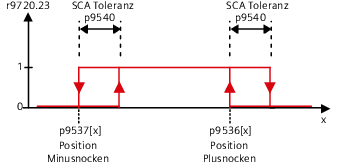

Die Funktion "Safe Cam" ("Sicherer Nocken") gibt ein sicheres Signal aus, wenn sich der Antrieb innerhalb eines spezifizierten Positionsbereichs befindet. Durch diese Funktion kann eine sichere Bereichserkennung für jede Achse realisiert werden.
Die zu überwachenden Nockenpositionen legen Sie mithilfe der Parameter p9536[x] und p9537[x] fest (mit x = 0 ... 29).
Beachten Sie folgende Regeln:
Die definierten Nocken müssen eine bestimmte Mindestlänge aufweisen: p9536[x] - p9537[x] >= p9540 + p9542.
Der Minus-Positionswert (p9537[x]) muss kleiner sein als der Plus-Positionswert (p9536[x]).
Die Nockenpositionen müssen einen Mindestabstand zur Moduloposition einhalten:
Der Minus-Positionswert eines Nockens muss größer sein, als die "untere Modulogrenze + Nockentoleranz (p9540) + Positionstoleranz (p9542)".
Der Plus-Positionswert eines Nockens muss kleiner sein als die obere Modulogrenze - Nockentoleranz (p9540) - Positionstoleranz (p9542).
Bei parametrierter Moduloposition (p9505 > 0) ist die untere Modulogrenze = 0, die obere Modulogrenze = p9505.
Somit kann keine Nocke über den Modulobereich hinweg definiert werden.
Bei einer Verletzung dieser Regeln gibt der Antrieb die Meldung F01686 ("SI Motion: Parametrierung Nockenposition unzulässig") heraus.
Durch unterschiedliche Takt- und Laufzeiten schalten die Nockensignale der beiden Überwachungskanäle nicht zeitgleich bzw. nicht genau auf der gleichen Position. Deshalb geben Sie bei Bedarf über Parameter p9540 ein Toleranzband für alle Nocken vor. Innerhalb dieses Toleranzbandes können die Überwachungskanäle unterschiedliche Signalzustände des gleichen Nockens haben:
Nocken und Toleranz parametrieren
| Hinweis |
Das Toleranzband für die Funktion SCA sollte so klein wie möglich gewählt werden (<5 ... 10 mm). Es ist sinnvoll, die Nockentoleranz größer gleich der Istwerttoleranz zu parametrieren. |
Referenzieren Sie die Achse mithilfe der Funktion "Sicheres Referenzieren".
Damit Änderungen an den Parametern dieser Safety-Funktion möglich sind, muss der Inbetriebnahme-Modus aktiviert sein. Die Safety-Funktion SCA steht für den ausgewählten Antrieb nur dann zur Verfügung, wenn in den Optionen vorher eine erweiterte Funktion mit Geber eingestellt und parametriert wurde.
In diesem Fenster können Sie folgende Einstellungen für den Antrieb vornehmen:
Funktion (SCA)
Modulowert SP
SI Motion SP Modulowert (Control Unit) (p9505)
Freigabe SCA
SI Motion Freigabe sichere Funktionen (Control Unit): Freigabe Sichere Nocken (p9501.28)
Hysterese
SI Motion SCA (SN) Toleranz (Control Unit) (pp9540)
Istposition
SI Motion Diagnose sichere Position: Lastseitiger Istwert auf Control Unit) (p9708[0])
Nocken
Freigabe
SI Motion SCA (SN) Freigabe (Control Unit) (p9503.Bit 0..29)
SCA1 bis SCA30
Nockenbezeichner
Bezeichnung der Nocken
1 bis 30
Position Minus [mm] (p9537[0..29])
SI Motion SCA (SN) Minusnocken-Position (Control Unit) (p9537[0..29])
SCA1 bis SCA30
Position Plus [mm]
SI Motion SCA (SN) Plusnocken-Position (Control Unit) (p9536[0..29])
SCA1 bis SCA30
Folgende LEDs können einen Status anzeigen (blau = Bedingung erfüllt; grau = Bedingung nicht erfüllt):
Funktion (SCA)
SCA angewählt
SI Motion antriebsintegriert Steuersignale: Abwahl SCA (r9720.23)
SCA aktiv
SI Motion SCA Statussignal (Control Unit): Funktion “Sicherer Nocken” aktiv (r9703.30)
SCA gültig
SI Motion SCA Statussignal (Control Unit): Funktion “Sicherer Nocken” gültig (r9703.31)
Nocken
Position auf Nocken
SI Motion SCA Statussignal (Control Unit): Position auf sicherem Nocken, 1 bis 30 (r9703.Bit 0..29)
Jede Einstellung in dieser Dialogmaske können Sie bei Bedarf alternativ auch über eine Parameterliste vornehmen. Zur Parameterliste gelangen Sie über über den Softkey ">>" und anschließend den Softkey "Parameterliste".
Über den Softkey "Nockenbezeichn." können Sie für Achsen/Antriebe Namen und Tooltips definieren.
Siehe auch:
Funktionsdialoge aufrufen